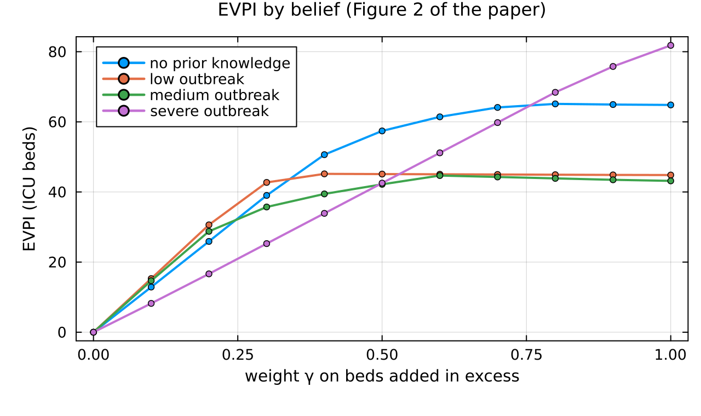
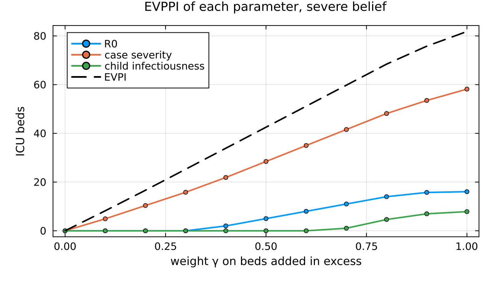

ICU beds, and EVPXI against EVPPI (Eze et al. 2023)
Simon Frost
- About this case study
- The paper
- EVPI against the weight on excess beds
- Three partial values
- What the package adds
- What to take away
- Next
About this case study
This case study replicates a published analysis. The inputs are tables printed in the paper, results are shown beside the published ones, and the same comparisons are in the test suite (test/fixtures/replications/eze2023_icu.json, test/test_replications.jl).
Three different quantities are called a “partial” value of information in this literature, and this paper uses two of them. The vignette computes all three on the paper’s table and shows that they are different numbers.
The paper
Eze, Geard, Baker, Campbell and Chadès (2023), “Value of information analysis for pandemic response: intensive care unit preparedness at the onset of COVID-19”, BMC Health Services Research 23:485, doi:10.1186/s12913-023-09479-4, CC BY 4.0. The inputs are Tables 3 and 4 of the article. The authors’ notebook (github.com/KingPeter2014/VoIAnalysis) was read, not run; the numbers it prints are quoted below as “authors’ notebook”.
Decision. How many intensive-care beds to add before a COVID-19 outbreak in a notional urban population of 450,000.
Actions. Add 0, 50, 100, 150 or 200 beds. Adding none is the baseline.
States. 27 scenarios: the basic reproduction number R0, case severity CS and the relative infectiousness of children CI, each low, medium or high.
Belief. The three parameters are independent with the same marginal probabilities. The paper has four beliefs; the “severe” one, (0.2, 0.3, 0.5) on (low, medium, high), is used for the partial values.
Outcome. A count of ICU beds. X(s) is the shortfall in beds in scenario s from the authors’ transmission and clinical-pathway models (Table 4). With B beds added, the loss is X − B when beds are still short, and γ (B − X) when beds were added in excess, where 0 ≤ γ ≤ 1 is how much a bed taken from other patients counts. Lower is better, so the payoff is minus the loss. It is a mismatch in beds, not beds delivered.
using DecisionAnalysis
include(joinpath("..", "_common.jl"))
using Plots
levels = [:Low, :Medium, :High]
triples = [(r, c, i) for r in 1:3 for c in 1:3 for i in 1:3] # R0 slowest, as Table 4
scenarios = [Symbol(levels[r], "_", levels[c], "_", levels[i]) for (r, c, i) in triples]
# Table 4 of the paper: shortfall in ICU beds, scenarios 1 to 27.
shortfall = [0, 0, 0, 0, 0, 0, 0, 0, 345, 0, 0, 0, 0, 29, 74, 552, 1075, 1406,
0, 0, 0, 46, 102, 157, 1389, 1584, 1485]
beds = [0, 50, 100, 150, 200]
actions = [Symbol("add_", b) for b in beds]
loss(x, b, γ) = x >= b ? x - b : γ * (b - x)
beliefs = ["no prior knowledge" => [1 // 3, 1 // 3, 1 // 3],
"low outbreak" => [1 // 2, 1 // 5, 3 // 10],
"medium outbreak" => [3 // 10, 1 // 2, 1 // 5],
"severe outbreak" => [1 // 5, 3 // 10, 1 // 2]]
joint(m) = [m[r] * m[c] * m[i] for (r, c, i) in triples]
function icu_problem(marginal, γ)
table = PayoffTable(actions, scenarios, [-loss(x, b, γ) for b in beds, x in shortfall])
return DecisionProblem(table, FiniteBelief(scenarios, joint(marginal)); baseline=:add_0)
end
severe = icu_problem(last(beliefs[4]), 1 // 1)
md_table(["beds added", "expected loss in beds", "expected gain over adding none", "chosen"],
[[string(b), -e, g, a in decide(severe, MaxExpectedUtility()).chosen]
for (b, a, e, g) in zip(beds, actions, aggregate(Expectation(), severe),
expected_gain_over_baseline(severe))]; digits=1)| beds added | expected loss in beds | expected gain over adding none | chosen |
|---|---|---|---|
| 0 | 583.4 | 0 | - |
| 50 | 567.5 | 15.8 | - |
| 100 | 558.4 | 25 | - |
| 150 | 555.7 | 27.7 | yes |
| 200 | 559.7 | 23.7 | - |
Under the severe belief and γ = 1 the best action is to add 150 beds, which is 27.7 beds better in expectation than adding none.
EVPI against the weight on excess beds
γs = (0:10) .// 10
evpi_curves = [name => [evpi(icu_problem(m, γ)) for γ in γs] for (name, m) in beliefs]
plt = plot(; xlabel="weight γ on beds added in excess", ylabel="EVPI (ICU beds)",
title="EVPI by belief (Figure 2 of the paper)", legend=:topleft)
for (name, curve) in evpi_curves
plot!(plt, Float64.(γs), Float64.(curve); label=name, marker=:circle, markersize=3)
end
png_figure(plt)
notebook = Dict("no prior knowledge" => (65.13, 64.81), "low outbreak" => (44.93, 44.83),
"medium outbreak" => (43.84, 43.10), "severe outbreak" => (68.46, 81.78))
md_table(["belief", "γ = 0.8, authors' notebook", "γ = 0.8, this package",
"γ = 1, authors' notebook", "γ = 1, this package"],
[[name, notebook[name][1], curve[9], notebook[name][2], curve[11]]
for (name, curve) in evpi_curves]; digits=2)| belief | γ = 0.8, authors’ notebook | γ = 0.8, this package | γ = 1, authors’ notebook | γ = 1, this package |
|---|---|---|---|---|
| no prior knowledge | 65.13 | 65.12 | 64.81 | 64.81 |
| low outbreak | 44.93 | 44.92 | 44.83 | 44.82 |
| medium outbreak | 43.84 | 43.87 | 43.1 | 43.16 |
| severe outbreak | 68.46 | 68.41 | 81.78 | 81.81 |
Agreement is to about 0.05 beds: the notebook uses shortfalls to two decimals and Table 4 prints whole beds. Two things do not agree.
- The medium belief. The workbook’s medium prior sums to 0.99: one cell multiplies the wrong marginals (scenario 20 gets 0.02 where 0.03 is meant) and the notebook warns that the belief “is not a probability distribution”. The printed curve is reproduced with that prior; with the proper one, used in the table, it differs by up to 0.3 beds along the curve.
- The article’s text. It quotes an EVPI of 65 beds at
γ = 0.8, which is the no-prior-knowledge curve, and then “33 ICU beds for belief in low outbreak” and “91 ICU beds” for the severe belief atγ = 1. Table 4 and the authors’ own notebook give 44.9 and 81.8. We could not reproduce 33 or 91 from any published input.
Three partial values
1. Testing one scenario (the paper’s “EVPXI”)
The paper defines EVPXI as the value of learning whether one scenario is the true one. Its Equation 6 puts the minimum over actions inside the sum over the remaining scenarios; read literally that resolves everything in both branches, and every EVPXI would equal the EVPI. The notebook does what Runge et al. (2011) did: if the scenario is refuted, one action is chosen for all the rest. That is the EVPPI of a two-cell partition.
evpxi = [evppi(severe, hypothesis_partition(severe, s)) for s in scenarios]
# Authors' notebook, cell 41, and Table 5 of the article: γ = 1, severe belief.
cell41 = [1.2, 1.8, 3.0, 1.8, 2.7, 4.5, 3.0, 4.5, 2.5, 1.8, 2.7, 4.5, 2.7, 2.7, 2.32, 1.5,
2.25, 4.81, 3.0, 4.5, 7.5, 3.0, 2.06, 1.06, 2.5, 4.81, 9.81]
table5 = [0, 0, 0, 0, 0, 0, 0, 0, 4.00, 0, 0, 0, 0, 1.80, 3.8, 4.00, 10.63, 6.40, 0, 0, 0,
1.00, 5.20, 4.90, 1.60, 4.00, 2.40]
md_table(["scenario (R0, CS, CI)", "shortfall", "probability", "article, Table 5",
"authors' notebook", "this package"],
[[join(levels[collect(t3)], ", "), x, p, t, c, v]
for (t3, x, p, t, c, v) in zip(triples, shortfall, severe.belief.probabilities,
table5, cell41, evpxi)]; digits=3)| scenario (R0, CS, CI) | shortfall | probability | article, Table 5 | authors’ notebook | this package |
|---|---|---|---|---|---|
| Low, Low, Low | 0 | 0.008 | 0 | 1.2 | 1.2 |
| Low, Low, Medium | 0 | 0.012 | 0 | 1.8 | 1.8 |
| Low, Low, High | 0 | 0.02 | 0 | 3 | 3 |
| Low, Medium, Low | 0 | 0.012 | 0 | 1.8 | 1.8 |
| Low, Medium, Medium | 0 | 0.018 | 0 | 2.7 | 2.7 |
| Low, Medium, High | 0 | 0.03 | 0 | 4.5 | 4.5 |
| Low, High, Low | 0 | 0.02 | 0 | 3 | 3 |
| Low, High, Medium | 0 | 0.03 | 0 | 4.5 | 4.5 |
| Low, High, High | 345 | 0.05 | 4 | 2.5 | 2.5 |
| Medium, Low, Low | 0 | 0.012 | 0 | 1.8 | 1.8 |
| Medium, Low, Medium | 0 | 0.018 | 0 | 2.7 | 2.7 |
| Medium, Low, High | 0 | 0.03 | 0 | 4.5 | 4.5 |
| Medium, Medium, Low | 0 | 0.018 | 0 | 2.7 | 2.7 |
| Medium, Medium, Medium | 29 | 0.027 | 1.8 | 2.7 | 2.7 |
| Medium, Medium, High | 74 | 0.045 | 3.8 | 2.32 | 2.34 |
| Medium, High, Low | 552 | 0.03 | 4 | 1.5 | 1.5 |
| Medium, High, Medium | 1075 | 0.045 | 10.63 | 2.25 | 2.25 |
| Medium, High, High | 1406 | 0.075 | 6.4 | 4.81 | 4.82 |
| High, Low, Low | 0 | 0.02 | 0 | 3 | 3 |
| High, Low, Medium | 0 | 0.03 | 0 | 4.5 | 4.5 |
| High, Low, High | 0 | 0.05 | 0 | 7.5 | 7.5 |
| High, Medium, Low | 46 | 0.03 | 1 | 3 | 3 |
| High, Medium, Medium | 102 | 0.045 | 5.2 | 2.06 | 2.07 |
| High, Medium, High | 157 | 0.075 | 4.9 | 1.06 | 1.07 |
| High, High, Low | 1389 | 0.05 | 1.6 | 2.5 | 2.5 |
| High, High, Medium | 1584 | 0.075 | 4 | 4.81 | 4.82 |
| High, High, High | 1485 | 0.125 | 2.4 | 9.81 | 9.82 |
We reproduce the notebook, to the rounding of Table 4, and not Table 5 of the article. The two disagree in kind. Under the severe belief the action without information is 150 beds, so learning that a scenario with no shortfall is the true one is worth 150 γ beds times its probability: 1.2 to 7.5 beds, where Table 5 prints zeros. And scenario 17, which Table 5 ranks first at 10.63 beds, is worth 2.25. No belief of the paper’s Table 3 gives Table 5; a search over product beliefs found one, with the weight on medium values, that comes within 0.63 beds in every row, which suggests that the table was made with an earlier prior than the one in its caption.
2. Collapsing the table (the paper’s “per-parameter EVPI”)
To value a parameter, the paper averages the shortfall over the other two parameters, unweighted, and computes the EVPI of the resulting three-scenario problem.
by(axis) = [t[axis] for t in triples]
mean_shortfall(axis) = [sum(shortfall[k] for k in 1:27 if triples[k][axis] == l) // 9
for l in 1:3]
function collapsed(x, marginal, γ)
table = PayoffTable(actions, levels, [-loss(xs, b, γ) for b in beds, xs in x])
return evpi(DecisionProblem(table, FiniteBelief(levels, marginal); baseline=:add_0))
end
md_table(["parameter", "mean shortfall when low, medium, high (from Table 4)",
"hard-coded in the authors' notebook"],
[["case severity", join(fmt.(mean_shortfall(2); digits=1), ", "), "0, 65.0, 982.89"],
["R0", join(fmt.(mean_shortfall(1); digits=1), ", "), "30.96, 451.12, 565.82"],
["child infectiousness", join(fmt.(mean_shortfall(3); digits=1), ", "),
"265.0, 381.8, 401.1"]])| parameter | mean shortfall when low, medium, high (from Table 4) | hard-coded in the authors’ notebook |
|---|---|---|
| case severity | 0, 45.3, 870.7 | 0, 65.0, 982.89 |
| R0 | 38.3, 348.4, 529.2 | 30.96, 451.12, 565.82 |
| child infectiousness | 220.8, 310, 385.2 | 265.0, 381.8, 401.1 |
The notebook’s collapsed shortfalls are not the means of Table 4; they appear to come from an earlier set of simulations. From the notebook’s own inputs its printed curves are reproduced exactly, including a slip: the curve for case severity was computed under the belief (0.33, 0.33, 0.34), the first in a list that the notebook indexes one place off, and not under the severe belief used for the other two.
m = last(beliefs[4])
md_table(["parameter, γ = 1", "authors' notebook", "this package, same inputs"],
[["case severity, belief (0.33, 0.33, 0.34)", 67.5,
collapsed([0, 65, 98289 // 100], [33 // 100, 33 // 100, 34 // 100], 1)],
["case severity, severe belief", 76.0, collapsed([0, 65, 98289 // 100], m, 1)],
["R0, severe belief", 30.0, collapsed([3096 // 100, 45112 // 100, 56582 // 100], m, 1)],
["child infectiousness, severe belief", 0.0,
collapsed([2650057687 // 10^7, 3818242251 // 10^7, 4010615308 // 10^7], m, 1)]];
digits=2)| parameter, γ = 1 | authors’ notebook | this package, same inputs |
|---|---|---|
| case severity, belief (0.33, 0.33, 0.34) | 67.5 | 67.5 |
| case severity, severe belief | 76 | 76 |
| R0, severe belief | 30 | 30 |
| child infectiousness, severe belief | 0 | 0 |
3. Learning the parameter (EVPPI)
The EVPPI of a parameter is the value of being told its level and nothing else, in the original 27-scenario problem: the partition of the scenarios by that parameter.
parameters = ["R0" => 1, "case severity" => 2, "child infectiousness" => 3]
md_table(["parameter, γ = 1, severe belief", "collapsed table, means of Table 4",
"EVPPI", "share of EVPI"],
[[name, collapsed(mean_shortfall(axis), m, 1), evppi(severe, by(axis)),
evppi(severe, by(axis)) / evpi(severe)] for (name, axis) in parameters];
digits=2)| parameter, γ = 1, severe belief | collapsed table, means of Table 4 | EVPPI | share of EVPI |
|---|---|---|---|
| R0 | 30 | 16.05 | 0.2 |
| case severity | 85 | 58.16 | 0.71 |
| child infectiousness | 0 | 7.87 | 0.1 |
The collapsed value is not the EVPPI, for two reasons. The loss is not linear in the shortfall, so the loss of the average shortfall is not the average loss; and the average is unweighted, where the EVPPI uses the belief about the other parameters. The collapsed value for case severity, 85 beds, is larger than the EVPI of the whole problem (81.8), which no partial value can be. The paper’s ranking survives (severity, then R0, then child infectiousness), but its conclusion that child infectiousness has no value at all does not: learning it alone is worth 7.9 beds, a tenth of the EVPI.
plt = plot(; xlabel="weight γ on beds added in excess", ylabel="ICU beds",
title="EVPPI of each parameter, severe belief", legend=:topleft)
for (name, axis) in parameters
plot!(plt, Float64.(γs), [Float64(evppi(icu_problem(m, γ), by(axis))) for γ in γs];
label=name, marker=:circle, markersize=3)
end
plot!(plt, Float64.(γs), Float64.(last(evpi_curves[4])); label="EVPI", linestyle=:dash,
color=:black)
png_figure(plt)
The three side by side
high_severity = [t[2] == 3 ? :high_severity : :other for t in triples]
md_table(["what is learned", "name in the paper", "value (ICU beds)"],
[["whether scenario 27 (all high) is the true one", "EVPXI",
evppi(severe, hypothesis_partition(severe, scenarios[27]))],
["whether case severity is high", "EVPXI for a parameter level (Figure 4)",
evppi(severe, high_severity)],
["the level of case severity", "not computed in the paper", evppi(severe, by(2))],
["the three-scenario problem collapsed on case severity",
"EVPI for a parameter (Figure 3)", collapsed(mean_shortfall(2), m, 1)],
["everything", "EVPI", evpi(severe)]]; digits=2)| what is learned | name in the paper | value (ICU beds) |
|---|---|---|
| whether scenario 27 (all high) is the true one | EVPXI | 9.82 |
| whether case severity is high | EVPXI for a parameter level (Figure 4) | 52.33 |
| the level of case severity | not computed in the paper | 58.16 |
| the three-scenario problem collapsed on case severity | EVPI for a parameter (Figure 3) | 85 |
| everything | EVPI | 81.81 |
The second and third are EVPPIs of a coarser and a finer partition of the same problem, so they are ordered, and no EVPPI exceeds the EVPI. The fourth is the EVPI of a different problem and obeys no such order: here it is above the EVPI.
What the package adds
Partial values do not add
single = [evppi(severe, by(axis)) for (_, axis) in parameters]
pairs = ["R0 and case severity" => [(t[1], t[2]) for t in triples],
"R0 and child infectiousness" => [(t[1], t[3]) for t in triples],
"case severity and child infectiousness" => [(t[2], t[3]) for t in triples]]
md_table(["learned together", "EVPPI", "sum of the separate EVPPIs"],
vcat([[name, evppi(severe, part), sum(single[[a, b]])]
for ((name, part), (a, b)) in zip(pairs, ((1, 2), (1, 3), (2, 3)))],
[["all three (EVPI)", evpi(severe), sum(single)]]); digits=2)| learned together | EVPPI | sum of the separate EVPPIs |
|---|---|---|
| R0 and case severity | 65.84 | 74.21 |
| R0 and child infectiousness | 16.05 | 23.92 |
| case severity and child infectiousness | 60.56 | 66.03 |
| all three (EVPI) | 81.81 | 82.08 |
Every pair is worth less than the sum of its parts: the parameters overlap in what they tell the manager. The overlap can be complete. R0 and child infectiousness together are worth exactly what R0 is worth alone, although child infectiousness alone is worth 7.9 beds. In the other direction, the paper states that once severity and R0 are known, child infectiousness would not change the action. On its Table 4 that is not so: severity and R0 together are worth 65.8 beds and all three 81.8, so child infectiousness is worth 16 beds to a manager who knows the other two.
Regret, and a belief that is a set
md_table(["rule", "beds to add, γ = 1"],
[["expected loss, severe belief", decide(severe, MaxExpectedUtility()).chosen],
["minimax regret", decide(severe, MinimaxRegret()).chosen],
["maximin", decide(severe, Maximin()).chosen]])| rule | beds to add, γ = 1 |
|---|---|
| expected loss, severe belief | add_150 |
| minimax regret | add_100 |
| maximin | add_200 |
The three rules give three different answers, 150, 100 and 200 beds: the choice rests on the belief more than in the case studies on foot-and-mouth disease and whooping cranes.
The paper treats its four beliefs as a sensitivity analysis. Taken together as a credal set they give the range of the EVPI and the actions that no belief in the set rules out.
function credal_problem(γ)
table = PayoffTable(actions, scenarios, [-loss(x, b, γ) for b in beds, x in shortfall])
return DecisionProblem(table, CredalSet(scenarios, [joint(mm) for (_, mm) in beliefs]);
baseline=:add_0)
end
md_table(["γ", "lowest EVPI", "highest EVPI", "E-admissible actions", "Γ-maximin"],
[begin
c = credal_problem(γ)
v = robust_evpi(c)
[Float64(γ), v.lower, v.upper, decide(c, EAdmissible()).chosen,
decide(c, GammaMaximin()).chosen]
end for γ in (1 // 5, 1 // 2, 4 // 5, 1 // 1)]; digits=1)| γ | lowest EVPI | highest EVPI | E-admissible actions | Γ-maximin |
|---|---|---|---|---|
| 0.2 | 16.6 | 30.6 | add_150, add_200 | add_200 |
| 0.5 | 42.2 | 61 | add_0, add_50, add_100, add_150, add_200 | add_200 |
| 0.8 | 43.9 | 78.4 | add_0, add_50, add_100, add_150, add_200 | add_200 |
| 1 | 43.2 | 87.1 | add_0, add_50, add_100, add_150 | add_150 |
At γ of 0.5 and 0.8 every action is the best for some belief in the set (four of the five at γ = 1), and the EVPI varies about twofold: with these four beliefs taken together the analysis does not recommend a number of beds.
What to take away
- The EVPI curves of the paper are reproduced to the rounding of its Table 4 for three of its four beliefs; the fourth was computed from a prior that sums to 0.99. The article’s text quotes 33 and 91 beds where its table and notebook give 44.9 and 81.8.
- The paper’s “EVPXI” of a scenario is
evppi(problem, hypothesis_partition(problem, s)). We reproduce the authors’ notebook and not Table 5 of the article, which does not follow from the belief in its caption; Equation 6 as printed would give the EVPI. - The paper’s “per-parameter EVPI” is the EVPI of a collapsed three-scenario problem. It is not the EVPPI of the parameter,
evppi(problem, partition_by_parameter), and its inputs in the notebook are not the means of Table 4. The ranking of the parameters is the same either way; the claim that child infectiousness is worth nothing is not (7.9 beds alone, 16 beds once the other two are known), and the collapsed value for severity exceeds the EVPI. - Added here: the proper EVPPI of each parameter and each pair, which shows that the values do not add (they overlap); the choice under regret; and the four beliefs as a credal set.
Next
Biological and operational uncertainty in weed control splits the EVPI between two sources of uncertainty.